Rupeezy · Product design case study
I designed the first step in bringing Rupeezy Trade and Invest together, then explored a more flexible navigation model for a future with more product contexts.
Why merge?
Rupeezy Trade served stock and F&O investors. Rupeezy Invest, the Investeezy app, served mutual-fund investors. Each had its own product experience and navigation.
Rupeezy Trade · stocks and F&O
For active traders. Funds appear only as a banner for the other app.
Rupeezy Invest · mutual funds
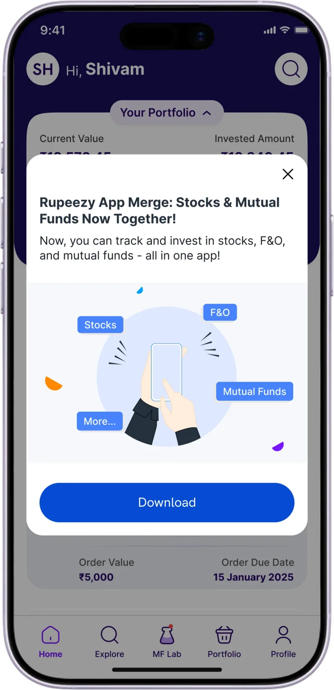
For fund investors, with its own five tabs.
The business also wanted customers to reach both products easily, and one place to build for.
Two apps meant building features twice, making compliance changes twice and running marketing twice. The goal was one product experience with less duplicated work.
Business context. Around 97% of company revenue came from Trade at the time. Company-reported, not a design outcome.
Before & evidence
Trade and Invest each had five bottom-navigation destinations, but they differed. Bringing them together meant deciding which tasks should share a home and which product-specific differences needed to stay clear.
The real tab labels from both apps, mapped to five shared destinations.
To decide where things would live, I mapped every feature of both apps, tab by tab, against a combined structure.
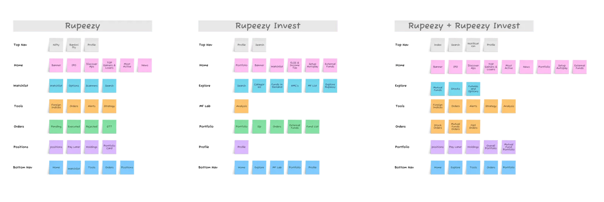
My original mapping board, from the earlier version of this case study.
I reviewed Play Store reviews, in-app feedback, Firebase behaviour data and competitor apps. I didn’t conduct direct user interviews, so these sources helped me inspect the existing experience, but didn’t prove a new model would work better.
Play Store reviews
Reviewers asking why Rupeezy needed two apps
How common that view is
In-app feedback
Problems people raise while using the app
Why they happen, or how many share them
Firebase behaviour
Which screens people use, and how often
What they were trying to do
Competitor apps
Groww, Angel One, Upstox and Paytm Money: everything in one app
Whether that suits Rupeezy’s customers
None of them could tell mewhat customers actually expected
Frame the problem
The challenge was to bring two product experiences into one app without making familiar tasks harder to find. We also had six weeks for the first release, and wanted to avoid major changes to the existing code.
How might we
bring Trade and Invest into one app while keeping familiar tasks easy to find and leaving room for the product to grow?
Today
Familiar
Current users still find their tasks where they expect them.
Now
Feasible
A first release in six weeks, with minimal changes to the code.
Later
Flexible
Room for more products without another redesign.
The constraints that shaped the navigation decision.
Options & Version 1 · shipped
The first direction came from senior stakeholders. With six weeks and a preference for minimal code change, the team chose a simple switch between Trade and Invest rather than rebuilding both experiences. I designed the agreed switch-based solution, a pragmatic way to bring both products into one app while keeping the first release focused.
Baseline
What if we kept two apps?
Familiar journeys stay exactly as they are, and there’s nothing to build. But features, compliance and marketing are done twice, and every new product means another app.
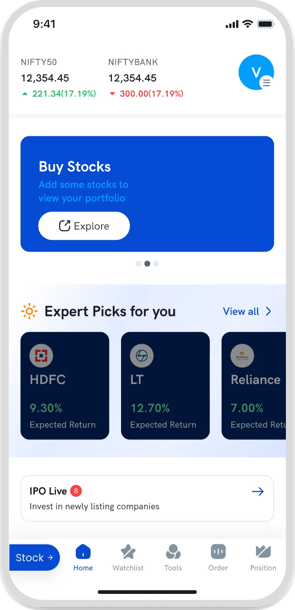
Shipped · selected by senior stakeholders
What if one switch joined them?
Each product keeps its own tabs, and the scope fit six weeks. But you’re in one product at a time, and navigation could grow complex as every new product becomes another mode.
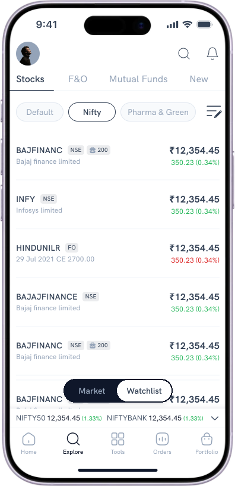
V2 concept · not shipped · my proposal
What if product and task were separate?
The product row sets the context; the tasks stay put. A new product is potentially one more tab, not another mode. But some places and labels change, and it means more implementation work.
A qualitative comparison of the trade-offs, not scores or measured research.
With the switch agreed, I explored three places to put it.
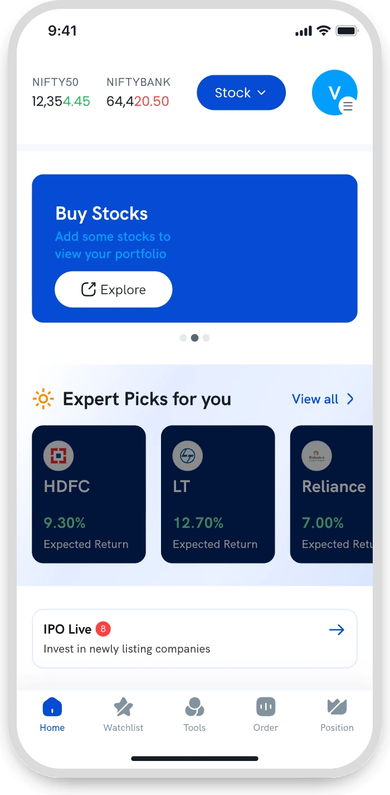
Rejected
Top bar
Already held indices, search and alerts. It meant changing screens outside the scope.
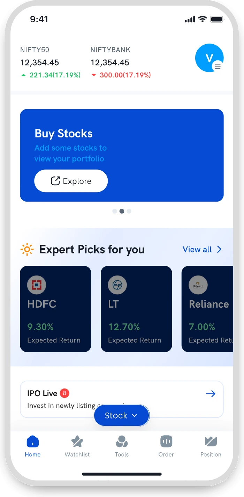
Rejected
Floating button
Only on Home. Deep in a stock flow, you’d have to back out to switch.
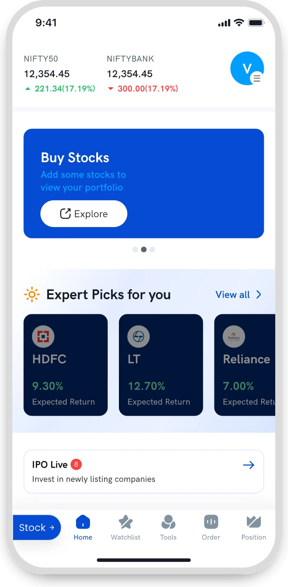
Chosen
Bottom navigation
On every screen, so customers could switch from anywhere.
Project fact. I don’t have a capture of the production switch. These are my placement explorations; bottom navigation shipped.
The limit of the switch
While designing Version 1, I began questioning how the switch would behave if Rupeezy grew beyond Trade and Invest. Each new product could become another mode to switch into. I saw an opportunity to separate product selection from the tasks people came to complete.
Version 1 · the switch
Every new product becomes another mode.
The button flips between Trade and Invest. A third product would sit behind the same button, with its own set of tabs.
Concept · two layers
Every new product becomes one more tab.
The product row already had a slot marked New. A product adds a tab here; the task bar below stays the same.
Design hypothesis. A potential scalability concern, not a measured failure or a confirmed roadmap.
Two layers, one model · concept
I proposed a two-layer navigation. The first layer chooses a product: Stocks, F&O or Funds. The second keeps Home, Explore, Tools, Orders and Portfolio in the same places. Product content changes; the task navigation doesn’t.
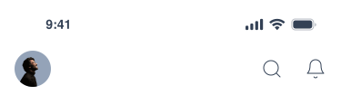
Stocks · Portfolio
Tap either layer above or below to see what moves.
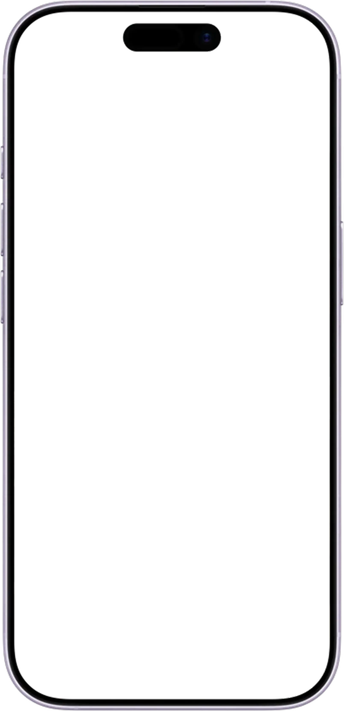
An interactive recreation built for this page: tap either layer and the other stays put.
The concept’s Home answered a question the old one never did: what do I own, across everything?
Before
After
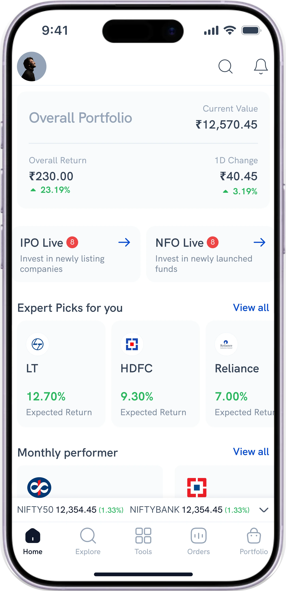
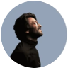
Profile moves into the top bar, one tap from anywhere on Home.Rebuilt from my original annotated before and after.
Prototype & open questions
Explaining the alternative verbally didn’t land. I built a clickable prototype to explore the interaction, then presented static screens to the design team and stakeholders. They saw value and supported further exploration, but implementation was deferred for engineering bandwidth and priorities.
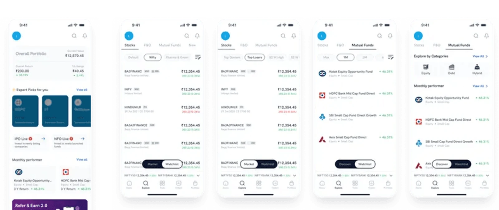
From my original screen set; not tested with users.
Most users were traders, so Stocks was a familiar default. But the business wanted funds to grow, and always opening on Stocks could keep Funds out of sight. I had no evidence for either, so I’d test the trade-off rather than assume an answer.
Stocks selected
Funds selected
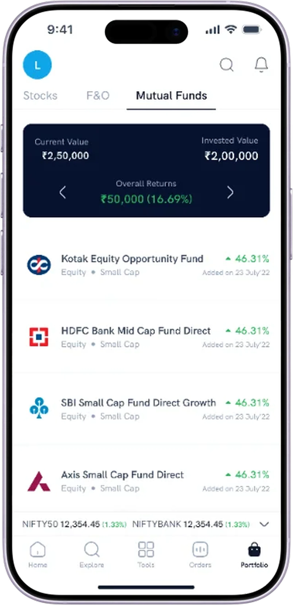
Neither default was chosen. Testing it is part of the plan in Outcomes & reflection.
Migration
The merge affected existing Invest users too. Shared KYC meant nobody verified again. Banners announced the move, but some users weren’t sure which app they were in or which to use, so we improved the messaging before widening the rollout. The old app was later removed from the stores.
1 · Banner announces the move
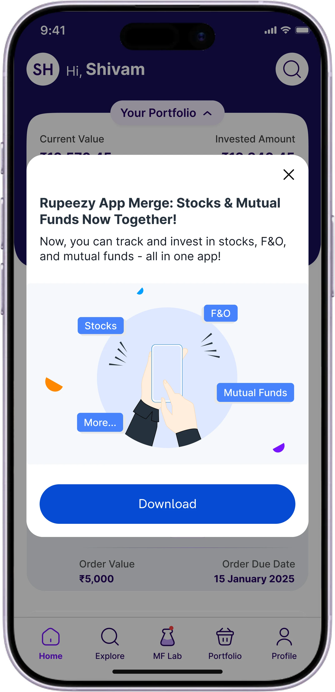
2 · Clearer, firmer message
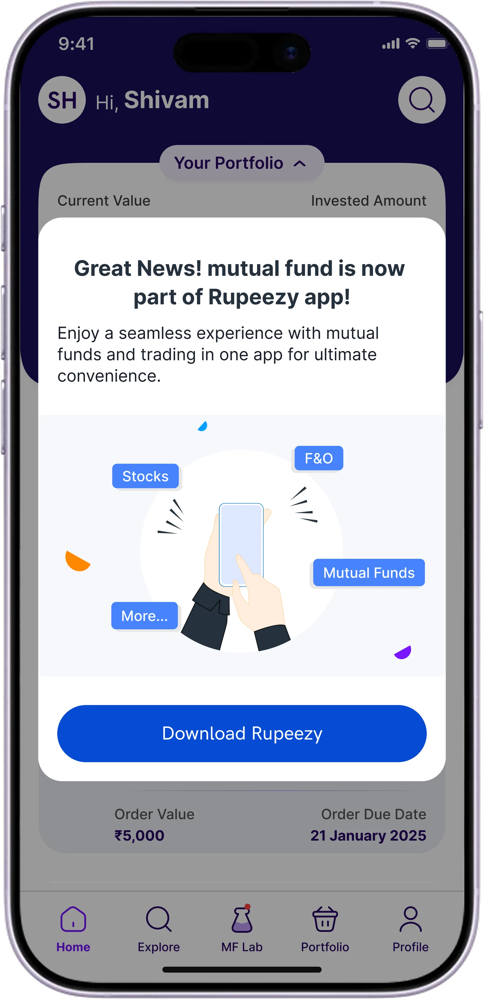
3 · Old app withdrawn
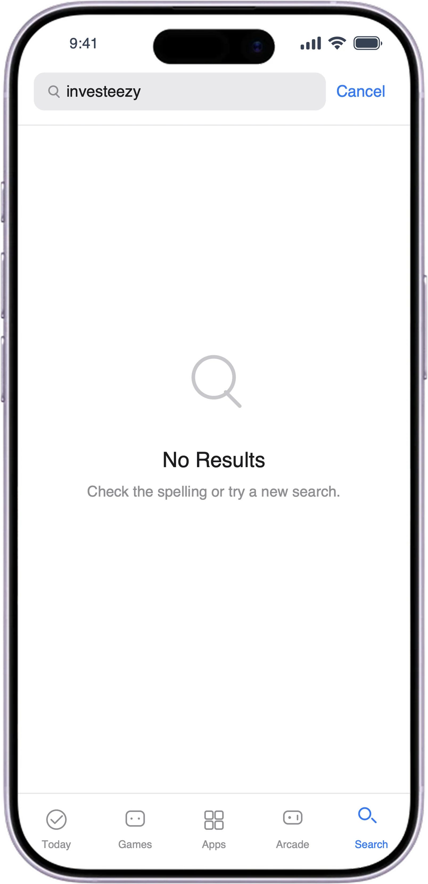
Outcomes & reflection
Shipped
Trade and Invest in one app.
One login.
One combined portfolio total.
Switch-based release, 15 January 2025.
Team-reported
4 → 3
Engineers on maintenance.
Team-reported operational change; not attributed to design alone.
Not established
Whether cross-selling improved.
Quantified maintenance savings.
Whether two layers improve findability, completion or satisfaction.
The project showed the difference between a practical first release and a longer-term architecture question. Next, I’d validate the two-layer model with traders and fund investors, and agree success measures before implementation.
Hypothesis
People can tell the product they’re in apart from the common tasks, and predict where a task lives.
Tree test
Can people find tasks in the proposed product and task structure?
Task-based usability test
Representative tasks, such as finding an order or reviewing a portfolio, with Stocks or Funds opening first. Watch navigation choices and confusion.
Evaluate
Task completion, first-click accuracy, wrong turns and backtracking, and where people got confused. Traders must not be slowed down to promote Funds.
Iterate
Revise the hierarchy and labels based on what we observe.
Proposed plan, not completed research. None of this was run.
The first release brought Trade and Invest together. Designing it also exposed how navigation should work when one app serves several investment products. My contribution wasn’t shipping the alternative: it was spotting the concern, making the concept tangible, and keeping it distinct from what the team actually delivered.